うさんぽ
はい！今回のゲームにはついにうさぎさんが出てきます
どうやらホームページの中だけでは窮屈だったようですね！
では、さっそく内容紹介！(｀・ω・´)
ベースはゲームの作り方チャンネルさんという方の初心者入門口座を参考に制作しております。
毎度おなじみですが、テクスチャは下書きのままです。
画像はプレイヤーとうさ様です。まずはうさ様がプレイヤーを追従するようにしませう
はい！できました(∩´∀｀)∩うさ様がプレイヤーの位置情報を取得したとき一定以上離れているとうさ様が突進していきます。
段差を上る時の動きは要改善ですね...
最初、プレイヤーもうさ様も自重で斜面が登れなかった為、斜面では常にかかる重力を０にしてアシストしています。
いやー、ラベ子も体重測る時にそのアシストほしいです。
うさ様の走りがややぎこちないのはご愛敬です。
Oh...
ときどき事故ります。
うさ様も一度や二度は許してくれますが、痛いものは痛いのです
嫌われました 泣
この状態のときは一定距離以上近づくと逃げるうさ様。
逃げられないときはプルプルします。この辺の制御はアニメーションで行っています。
プレイヤー、うさ様どちらも時々目に見えない何かに引っかかるのでイラスト差し替えたときに当たり判定も直す必要がありそうです。
最終的にはマップ内に隠れているうさ様達を見つけてゴールまで連れていくというゲームにする予定です！ ゴールした時の親密度に応じてホームに連れて帰れるという仕様も作っていきたいです^_^

最後まで読んでくださりありがとうございました！
 
